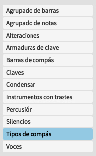

Composición
Introducción de notas
Revisar las preferencias de introducción y edición de notas. ⌘,
- Por defecto, especificar el tono: Después de la duración/Antes de la duración.
- Especificar alteración, puntillo y articulaciones: Después de introducir nota/Antes de introducir nota.
- Audición: Reproducir notas al introducir y al seleccionar.
- Introducción de percusión: Usar mapa de percusión/Usar posición de pentagrama
- Introducción por ratón: Activa edición de tono y posición rítmica de nota usando el ratón. (Mover selección o copiar selección alt⌥ y dirección de ratón)
Revisar las opciones de introducción de notas. ⇧⌘I
- Revisar y tener en cuenta las opciones de pegado especial: Permitir notas duplicadas/No duplicar notas
- Revisar y tener en cuental la estrategia de voces para ritmos idénticos: Mezclar voces/No mezclar voces.
Opciones de notación
Revisar las opciones de introducción y edición de notas. ⇧⌘N
Inspeccionar y dejar al gusto cada una de las opciones. Configuración personal.
Crear archivo con Flow para todas estas opciones.
